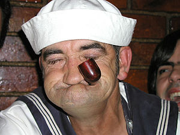
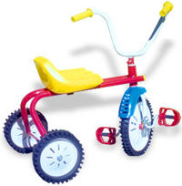
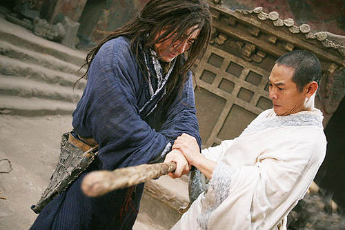
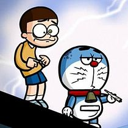
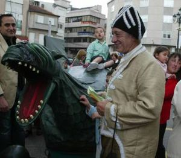

Rotondela
 De: La Frikipedia, la enciclopedia extremadamente seria.
De: La Frikipedia, la enciclopedia extremadamente seria.
| De la serie ciudades del mundo:
|
| Redonda Ela
|

|
|
| (Bandera)
|
(Escudo de armas)
|
|
| Topónimo oficial
|
Redondela
|
| País
|
Galicia/ La Portela
|
| Código postal
|
666
|
| Superficie
|
Sí
|
| Altitud
|
Baixiña, a ras de chan
|
| Distancia
|
Medimos en xardineiras
|
| Fundación
|
Lixo Rock
|
| Población
|
Haberla haila
|
| Gentilicio
|
Choqueiros, Redondeláns
|
| Alcalde
|
Xaime Delgado Rey
|
| tonto no es el que dice tonterías, es el que las hace
|
Redondela se trata de un minúsculo, acogedor y bello pueblo afincado entre Pontevedra y Vigo. Ésta última pertenece a Redondela, pero los redondelanos le otorgan la libertad a cambio de que su población no pise estas "vírgenes" y sacrosantas calles.
A este pueblo se le conoce también por "El pueblo de las magestuosas aceras (para gordos)", ya que éstas conforman el 80% (valor estimado) del total de sus tierras, obligando a sus habitantes a desplazarse en ciclomotores y aeronaves espaciales repartidas exclusivamente para la ocasión, al igual que un puñado de jardineras para evitar construír un carril bici, que los coches aparquen encima y ya de paso dejar el mismo ancho real para caminar que antaño, a menos que vayas borracho que es cuando realmente aprovechas todo el ancho de las aceras en si.
Cuando las lluvias, excasas en esta zona, hacen acto de presencia cayendo de forma descomunal (chuzos como pedrolos), el río que atraviesa fragmentando en dos la localidad, el Alvedosa, con sus aguas puras y cristalinas, se desborda pasionalmente llenando de amor las calles que pasan a un nivel inferior, generando a partir de ese instante, unos magníficos charcos a modo de piscina, en los cuales, los gadgeto-coches activan de forma automática el modo submarino, pudiendo apreciar desde el fondo, los magníficos ejemplares marinos, tales como peces muertos, tortugas mutantes, magikarps, personas con 5 dedos (Mi civilización tiene 6 dedos. Nos bañábamos en ese río antes de la llegada de los humanos a la Tierra).
El idioma común es el castrapo cerrado, como el buen cocido fue creado con un poco de todo, pero para haceros una idea del idioma simplemente tendes que ler o artículo completo.
Villas Ocultas
Redondela está descompuesta por 13 aldeillas peculiares.
- Cabeiro: monte.
- Cedeira: Cabeiro refinado.
- Cesantes: Cabeiro con vistas al mar.
- Chapela: conocida por tierra de nadie(anyone's land), aunque los rumores indican que Vigo planea hacerse con ella a base de chuzar semáforos en cualquier punto con hormigón desocupado.
- Quintela: monte, pero con una característica irrepetible, gozan de la rotonda peor colocada del mundo.
- Negros San Esteban de: el propio nombre lo indica, tierra de
gitanos saltarines que bailan alrededor de las hogueras mientras Camela emana a todo volumen de las DKV.
- Reboreda: Cabeiro del norte
- Redondela: aceras, jardineras, y algún que otro bazar chino, donde tendremos que agachar la cabeza para comunicarnos con esos grandes
políglotas, herreros y luthiers cirujanos que ha dado China.
- Saxamonde: más monte.
- San Vicente de Trasmañó : allá a lo lejos se vé.
- Ventosela: monte con un guardaniños pocosuertudos incorporado.
- Vilar de Infesta: criadero de malotes.
- O Viso: el olimpo redondelano, pa llegar a él hay que pasar 5 pruebas de hombría, sólo los más fuertes conseguiran vivir en esa zona falta de oxígeno.
Sedes de agrupación de la plebe
- Eroski Cntr: lugar transitado frecuentemente por las amas de casa todas las mañanas con el objetivo principal de ponerse al día en los últimos cotilleos acaecidos en la aldea (lo mismo para panaderías, froiz, día, moldes) y ligar con el carnicero de turno diciendo cosas como "déjame
la carne bien picada", quedando como objetivo secundario hacer la compra del día, pero para disimular llenan el carro igualmente hasta arriba 5 días a la semana para lo cual disponen en sus casas de unos macrocongeladores con archivador automático capaces de datar todo lo que allí entra (esta funcion tiende a sobrecalentarse al primer día de uso)
- Casa de la torre y alrededores: el meadero municipal por excelencia, con horario de cierre a las 10 (a partir de ahí hay que buscar un buen arbusto), tambien se usa como biblioteca y posada para los peregrinos. Los alrededores están ateigados de skaters, donde hay de todo, están los buenos
(locos) que chimpan todas las escaleras haciendo alguna acrobacia por el medio, y los que intentan levantar el skate del suelo cayéndose multitud de veces como si del doctor Boskonovitch se tratasen (estos son los que merece la pena pararse a mirar).
 en esta escena podemos contemplar a un asiduo al bolero y al gimnasio tanto de día pa ponerse cachitas, como de noche pa ponerse feliz, a su lado, una raza en peligro de extinción, el unicejo contentín.
- Ambulatorio: los yonkis lo utilizan como lugar de información.
La organización del hospital es la siguiente...
Vamos al siguiente punto, el horario, bueno, es importante comprender que una vez dentro del ambulatorio estás en un submundo distinto, con horario solar propio que difiere en 2h del nuestro, a saber, si en el exterior son las 12 en el hospital aun son las 10, con lo cual si tienes cita para las 8 no madruges, con levantarte a las 10 vas sobrado.
La eficiencia de sus médicos es altísima comparada con los de Vigo, un ejemplo claro: un paciente llega sangrando y en su mano derecha lleva sujeto su brazo izquierdo, diagnostico redondelano: "tranquilo mañana le empieza a crecer uno nuevo, pero procure masturbarse con la mano habilidosa sino puede que le vuelva a ocurrir lo mismo, que pase el siguiente", diagnóstico vigués:(despues de una espera que se reduce sólo a 2h dado que el paciente sangra mucho) "usted ha perdido el brazo y sufre de una hemorragia que le puede causar la muerte, ahora mismo le cortamos la hemorragia y le suministramos unos calmantes".
Los vehículos de que disponen son aeroambulancias que fueron otorgadas tras la humanización de las calles, dado que al final no se pudo llevar a cabo el proyecto de un carril propio para ambulancias de 4 ruedas que atravesaría redondela por el paseo de la junquera y la alameda.
- Piscina y Gimnasio: lugar al que van los cachitas a ponerse más cachitas, único establecimiento público al que asiste más gente de noche que de dia.
- Pabellón Municipal: prolongación de la piscina.
- El bolero: viene siendo la disco de los chicos grandes de bonitas dentaduras.
 en la imagen, el vehículo más temido en toda Redondela
- La junquera: cuenta con un campucho vallado y con redes furadas donde los niños dan sus primeros pinitos para convertirse en estrellas: la primera caída, el primer balonazo en la jeta, el primer diente volador, el primer balón que cuelan en el quiosco, el primer insulto, el primer llanto... todo esto sin que sus padres afincados en la cafetería de al lado les hagan ningun caso (amor del bueno). Tambien cuenta de un formidable paseo donde los triciclos con turbocoehtes sin frenos esquivando a ancianos, jóvenes empolados, patamóns que puedan sobrevolar la zona.
- Alameda: zona de paseo, magreo y muchas mas cosas acabadas en meo (incluido meo).
- Vinos: zona desértica, lugar perfecto para pinchar las ruedas del coche de algún forastero.
- Los IES: criadero de botelloneros.
- Bajos diversos: botellón 24 horas y con techo, la mayoría se extienden por la Picota y el centro de Redondela.
- El apeadero: los científicos prueban lanzar gatos, perros y ratas a las vías para ver como responden al impacto. También, invidentemente, sirve para coger el tren.
- Local de ensayo:
Enorme habitáculo, perfectamente insonorizado y con unas "condiciones ideales" para que nuestros virtuosos músicos puedan ensayar con una calidad de audio aceptable.
- Campo del Choco: Es una fábrica de niños creidos.
- La Portela: un barriucho estupendástico, que destaca por tener suministro de lodo gratis todo el año. Si negocian bien este hecho acabaran gobernando el mundo, y luego Galicia.
- La fábrica: es a donde van los menores de 18 años con poco gusto musical a emborracharse y buscar líos fáciles.
- El mercado: es donde se realizan combates clandestinos entre leitujas (expertas en muay thai) y muxos (expertos en artes marciales chinas). Se realizan apuestas que van desde una cesta de tomates hasta 5kg de vieiras.
- Arroba: @ para los chachis. Es una semidiscoteca afincada en lo más alto de Redondela. En serio declive tras el nuevo horario de la fábrica, mejor situada y sin cuestas que subir además de ofrecer la misma propuesta musical. Propongo poner un teleférico gratis para borrachos y vagos además de variar radicalmente la estética y la música. Es eso o derruirla y poner un radar en su lugar.
Estilos de gentuza
En Redondela como en todos los lugares se puede hacer una agrupación general de la gente según sus costumbres y actitudes, puntos de fuerza , carisma, reconocimiento, etc. Voy a hacer la lista refiriéndome a las edades donde hay más diversidad de carácteres, ya que de bebés todos somos iguales e inteligentes (chupamos teta cuanto queremos), en la niñez todos aprendemos con más o menos facilidad las habilidades básicas de los humanoides, andar a dos patas, hablar por la boca, leer con los ojos y escribir (bueno, esto no todos), y por último la vejez puede ser de dos tipos, sedentarios(los que quedan tirados en casa) y activos (los que van al bolero, a la petanca, al bingo y a dar paseos, ya sea con la mujer o con los amigos). A partir de la niñez comienza la involución en la que se aprenden cosas que no sirven pa nada, dejando los cerebros colapsados, fuera de cobertura, y haciéndonos poco a poco más giliparvos, dividiéndose estas gentes en las siguientes ramificaciones (del latín ramajes de los arbolius):
- Frikis: es esa gente que juega a las cartas de Yu-Gi-Oh y se creen que tienen superpoderes (si te encuentras con un friki que te mira fijamente, ten cuidado, es posible que esté leyéndote la mente, o utilizando sus rayos láser para verte sin ropa). Los juegos frikis más conocidos son: el poker (si juegas delante del ordenador eres friki), el fútbol (si te sabes lo que cobra cada jugador eres friki), Dungeons and Dragons, World of Warcraft (si le llamas WOW eres excesivamente friki) y luchar con palos en el monte (friki no sé, pero un poco peculiar si que eres). Hay tres tipos de frikis:
- Muy frikis: también conocidos por enfermos mentales. Son los que se disfrazan de cosas raras y hacen tonterías en exceso, la mayoría habitan en Japón, pero en Redondela seguro que hay alguno suelto.
- Frikis: son los que ven animes tipo Son Goku y Naruto y no les importa ser considerados frikis.
- Frikis renegados: son los que ven animes tipo Son Goku y lo niegan.
- Guays/Guayas: se denomina así a esa gente que se cree que es lo mejor que ha dado la tierra (mejores que la silicona), que el mundo gira a su alrededor (atrevidos ellos, todo el mundo sabe que el mundo gira alrededor del peto de doraemon)... pero al final mean por fuera igual que todos.
 eh aquí el porrero jefe luchando con el aspirante por el megapeta hecho con roble del bueno y nocilla.
- Porreros/as: una clase de individuos que están mas de moda que Avatar. Es más, los propios porreros afirman que Ghames Camarón les robó la idea de hablar con las plantas y ver tios azules saltar por el bosque. Las cualidades diferenciadoras de los porreros son una leve caida de ojos y una sonrisa de oreja a oreja (se dice que Jackie Chan desbancó a Bob Marley como profeta principal). Su lema es, fuma más, vivirás más (capítulo 1, versículo 1 de la santa L, donde especifica, "reirse alarga la vida").

- Trabajadores/as: bien, antes de entrar en materia conviene diferenciar trabajadores de gente con trabajo. Gente con trabajo puede ser cualquiera con un mínimo interés por el dinero. Los trabajadores son aquellas personas que trabajan por motivos más allá del entendimiento de los vagos. Son seres creados en una generación anterior donde, desde pequeños ya le metian la mano por el culo a las vacas, ían ó monte a por leña, apañaban herva y demás tareas, esto hace que no concivan la vida sin trabajo y que prácticamente no tengan más
hobbits hobbies jobis que trabajar y buscar faena de seguido, ya sea en su propio trabajo o fuera de él.
- Pijos/as de Vigo: gente que nos quiere inavidr, son comos los Jonas Brothers (
se distinguen por su peinado lamido polas touras) pero en malotes, y un pelín más cultos que los malotes arcaicos ya que sus amenazas son "te voy a dar una puñada que te va a dejar pululando más allá de...de.. bueno eh, ya sabes de donde" en lugar del típico, "una ostia mia y quedas sangrando un mes".
- Malotes/as: no los mirés, ignóralos, una leve mirada es motivo de amenazas, y ten cuidado ya que si el malote no supera el 1'60m y no tiene ni navaja ni pistola mandará a su primo de zumosol con una mafia propia en el monte para apalearte. Hay dos clases de malotes, malotes de escuela, que nunca fueron aceptados por personas con una inteligencia más o menos aceptable y malotes gitanos, que nunca fueron aceptados fuera de su familia, pero mucho más peligrosos ya que cuando amenazan rachan de camiseta y se acuerdan hasta de su tatarabuelo el tano jefe. Los malotes digievolucionan a criminales en el momento que siguen haciendo uso de pistolitas, navajitas y abuso de fuerza con más de 18 años.
- Deportistas: gente que se cansa pa ná, es una raza afable ya que de lo cansaos que están no tienen fuerzas pa discutir.
- WASP o Mötley Crüe (llamados jebis) hasta punk o rock español del estilo Marea, EUKZ, Heredeiros da Crus y otros varios. Los rockeros se mueven por el escenario de forma inquieta, con movimientos extrañamente sorprendentes llegando a ser por veces provocativos o nauseabundos. La cualidad que diferencia a los rockeros de los poperos, a parte de que estos tocan música, es que las energías y la garganta se la dejan siempre en el escenario. Los rockeros más famosos de Redondela son Nocheni, The Silence, Marxe Esquerda, TOK, y todos sus seguidores cervezeros locos como cabras, que se empujan durante los conciertos simplemente pare descubrir cuanto alcohol llevan en sangre. El experimento científico consiste en: si eres tu el que empuja estás ok, si te empujan y no caes estás bien pero eres tonto ya que deberias ser tú el que empuje al resto, si te empujan y caes estás medio peneque y si caes sin que te empujen ganas!
- Policias Polis: son gente uniformada de azul con porras y que hacen lo mismo que Michael Phelps, nada. Eso sí, son muy majos, siempre que tienen un momento salen a la calle a charlar un poco con quien sea.
- Lameconas (semivarón): son pajilleros aspirantes a jincadores. Su táctica habitual suele ser hablar en lenguaje de hembra (maips, tk, yo más, :p, :), peke, potorra, saes, XD, tontita, corasón, no flipes, muaks, bss, fea, te amo, todo y más, uoooo...), una vez aprendido el idioma la cuestión es encimar y asentir, todo el día ahí, cuanto más pesado y cuanta menos personalidad mejor. En el momento que pongas trabas a las ideas de la hembra olvídate de ella, otro lameconas sin personalidad asentidor se la llevará.
- Chicas fáciles (femina): una buena orneada de niñas desde 12 a 18 años (no muy avisadas) que van dando besitos y abrazos a todo aquel que habite redondela y reconocerían a cualquier chaval sólo con mirarle las partes pudientas. Su principal característica es la capacidad de adaptación (hay que saber adaptarse a todos).
Plantas
Se extinguieron. Los porreros se fumaron todas las especies y luego le echaron la culpa a los pirómanos de quemar los montes.
Animalitos
- Jamusinos: Corretean por los montes a mucha velocidad, esta especie nació del cruce entre un avestruz y el correcaminos. Lo sé porque vi Up.
- Cabras sobre motos: Corretean por lo montes a mucha velocidad, esta especie nació del cruce entre un motorrato de marte y la cabra de la legión.
- Mamuts: Se pasean paseniñamente por las aceras redondelanas.
- Unicornios parlantes: Habitan en los bajos de porreros, alli pastan cómodamente y les mandan unos monólogos dest
ornillantes.
- Jaivotas: Animales sufridores. Sufren de gastrointeritis aguda desde siempre. Sobrevuelan con ayuda de su turbopropulsor los alrededores del mercado.
- Grifos, quimeras, ligres: Una serie de animales raros o mitológicos que habitan en O Viso rodeados por gremlins, arcángeles, ninfas, elfos, gnomos y héroes humanos.
- Borricos, mulas de carga, bois, vacas, ouvellas e touras: Animales típicos de las aldeas campestres redondelanas.
- Cans e jatos: Son estes animales domésticos que domesticamente decoran as calles de cagarrutas. Eu tamén lles chamo jaivotas terrestres.
- Peces insanos: Se pueden ver intentando escapar del alvedosa todos desesperados.
- Oca de la portela: Símbolo portelano. Se dice que cuando los portelanos consigan gobernar el mundo nos obligarán a adorar a las ocas en lugar de a Jesucristo. Oca nuestra que habitas en los pantanos danos hoy nuestro "cuak" de cada día... bla bla bla.
- Castor o Marmota: Típico animal redondelano que se puede encontrar paseando por cualquier punto de Redondela.
Linguaxe Redondelá
- Cada cal fala como quere, pero sempre pola boca. As coletillas máis usadas son carallo, ostia, puta e cona.
- Insultos típicos: de dos tipos, los cariñosos y los que no.
- Insultos cariñosos: guarra, puta, zorra, feo, gordo, cabrón...
- Insultos No cariñosos: el resto
Peculiaridades al volante
- en Redondela primero nos dirigimos al objetivo y luego aparcamos el coche al lado. Las aceras están pa aparcar, no pa pasear que aquí somos todos muy vagos. Por eso el alcalde hizo las aceras tan anchas, pa que pueda aparcar un trailer a la vez que el y su mujer pasean agarrados de la mano. A lo úinco que no le encuentro utilidad es a las jardineras... si por lo menos diesen frutas.
- Los malotes conducen unas semimotos (tambien llamadas firri firri por el sonido que hacen), y las pasean perfectamente por calles peatonales, adelantan por cualquier lado posible menos por encima y por debajo (aunque cualquier día los veremos intentándolo) y llevan los cascos a modo de gorra porque es más guay. En caso de que un malote tenga coche, lo tuneará, y este será probablemente el coche tuneado más feo que...que... no hay nada más feo.
- Los frikis suelen conducir los coches de los padres y los aparcan de oido (aclaración para tontos, aparcan haciendo contacto con los coches que impidan una maniobra sencilla). Pero a ellos les da igual, porque si alguén los vé, hacen escapismo o conjuros de amnesia y siempre huyen.
- Los guays suelen conducir coches propios pagados por sus padres, siniestrándolos al poco por excesos de velocidad normalmente, y por no tener ni puta idea, dicho sea de paso. También pueden conducir motos de gran cilindrada pagadas por sus padres.
- Los deportistas no utilizan coches, ni motos. Si pueden ir corriendo, en skate o en bicicleta a su destino nunca se plantearán coger el coche, aunque truene y se aparezca Zapdos planeando por el gris cielo.
- Los trabajadores suelen tener coches propios pagados por ellos mismos, denominanse tractores, C15's y Berlingos.
- Las guarrindongas se enrollan con cualquiera que las pasee en coche, en moto, o en semimotos.
- Los porreros no conducen, vuelan!!
- Los rockeros salen en sus choppers(
no es lo que le echa tu madre a los bocatas, ni ningún pianista famoso si es lo que piensas)... jaja, que va, ya quisieran ellos.
- Conductores borrachos y sobrios pero subnormales(demasiados): son unos malparidos que conducen poniéndose en peligro ellos mismos (no se pierde mucho), pero también a otra gente que no tiene porque verse afectada por estos papajaitas. Características de conducción de esta escoria: no mantener una velocidad constante, frenando y dando acelerones habitualmente sin motivo, hacer adelantamientos muy arriesgados, invadir de seguido el carril contrario, tirar de jarrucho en zonas con gente e ir a una velocidad extremadamente lenta (sí, ir muy lento es peligroso porque te puedes dormir o agotar la paciencia del que llevas detrás obligándolo a hacer alguna cafrada).
- Las carreteras están señalizadas como el culo, los límites de velocidad no hay quién los entienda, muchos pasos de peatones están puestos en puntos muertos, los contenedores están puestos en curvas y delante de pasos de peatones, impidiendo la visibilidad y mas desastres como rotondas situadas estratégicamente en rectas donde se podía llegar a 80, zonas de adelantamiento en rectas cortas y sin visibilidad poniendo líneas continuas en rectas preciosas de muy buen adelantar, y ojo, ahora hasta ponen guardarrailes de dos metros de altura en intersecciones para provocar colisiones.
- Pero bueno, las malas señalizaciones son excusas para cometer alguna cafrada, pero joder, lo que hacen ciertos conductores es de estresados que no saben poner el pié en el freno, debe haber un pensamiento general de que si frenas eres un cagado y acelerando más valiente. La gente que está dentro de una rotonda tiene preferencia (no te puedes meter dentro cuando te salga de los huevos y hacer frenar a los de la rotonda), un ceda el paso es que si hay otro coche tú le tienes que ceder el paso (no él a ti), si la gente está esperando para cruzar en un paso de peatones lo que hay es que frenar, no acelerar e intentar atropellarlo, aunque pueda parecer divertido dependiendo de quién sea el que cruce, si la carretera es estrecha y no caben dos coches es conveniente frenar y no cargarse el retrovisor del de enfrente...¿? Esto se agrava si el vehículo es un camión o todoterreno. Y ya paso de comentar nada sobre autobuses porque tendría que hacer un artículo aparte, autobús es a carretera lo mismo que dios a iglesia.
- Pisar mierda: porque no creo que dé mucha suerte ir apestando por ahí.
- Las masterballs, ya que es la única manera de capturarlos.
- Que cuando quieren reclamar algo siempre salen perdiendo (tanto los redondelanos como el resto de personas). Porque muchas compañías sólo dejan reclamar por un ring ring de pago, llamas porque no queda más remedio. Después de escuchar una música muy chula (Ana Kiro) salen unas máquinas tontas, sordas y demasiado cotillas (máquinas operadoras = viejas del barrio) que entretienen 10 minutos, luego de pulsar 1,2 o 3 según el problema te dicen, por fin, que te pondrán con una operadora de carne y hueso, pero antes ponen de nuevo esa tierna melodía (Ana Kiro), cuando por fin parece que se va a poner la operadora vuelve a aparecer la voz de la máquina que dice, disculpe, todas nuestras operadoras están ocupadas, inténtelo más tarde (que jode que te putee un ser sin conciencia). Bien, es ahí cuando la gente se cabrea (power rangers metamorfosis), porque como seres inteligentes que somos, si la empresa a la que quieren reclamar se encuentra lejos y sólo dá la opción de reclamar por teléfono de pago, acaban pensando, puedo seguir llamando y gastarme un feixe de pelas sin obtener resultado (no compensa), puedo hacer un viajecito y matarlos (tampoco compensa, aunque sería reconfortante), o puedo resignarme, quedar sin reclamación, y salir a tirarle piedras a los gatos, lanzar flechas a las gaviotas o subir cuestas haciendo el pino para aliviar a neura (trucos Bud Spencer).
- A hacienda, porque hacienda somos todos, los todos tontos pagan y los todos listos se llevan la pasta.
- Los programas de corazón: porque para ver a tontos hacer y decir estupideces nos llega con salir a la calle. Además en ese horario deberían poner algo más decente, como sadomasoquismo.
- Las telenovelas: porque para ver tetas y culos bien podían poner una porno directamente y dejarse de amagar.
- Enfermar en vacaciones. Es lo peor junto con pisar mierda.
- Trabajar y que tu empresa no te pague, es ahí cuando el redondelano medio empieza a robar en fruterías y acaba entrando a mano armada en los bancos.
- Estudiar y suspender. En ese caso el estudiante redondelano medio decide optar por la papiroflexia, el humorismo, los malabares con el bic, el boxeo...etc.
- Ir a Vigo y ver que los vigueses de pintas raras no dejan de mirarte estupefactos y sorprendidos por tu falta de estilo. Bueno, eso en realidad no lo odiamos, eso mola.
- Que un viejo ligue con tu chica. Que un tonto ligue con tu chica. Que un flemillas ligue con tu chica. Pero sobre todo, lo que más odiamos es que sea tu chica la que ligue con ellos.
- Ir en autobús (pagándolo previamente), sin MP3, que pongan la radio y la música sea una basura, es ahí cuando realmente conviene usar el martillo en la ventanilla de emergencia y saltar aunque esté en marcha. Las chicas odian que un baboso se les siente al lado, en ese caso ellas se plantean coger el martillo y estampárselo en la cara.
- Las muertes de la madre de bambi y de mufasa, la separación de tod y toby, comprender que si te lanzas desde un 6º con un paraguas abierto no vuelas y demás detalles. Todo eso es odio, rabia, furia acumulada para el resto de la vida, produciendo distorsiones en la percepción de la realidad y graves trastornos. De hecho Slowpoke era aficionado a Alicia en el país de las Maravillas.
- Tener un grano en el interior de la nariz o de las orejas.
- Cocinar por primera vez y tener que comerse la comida.
- Comprar una casa en una zona tranquila y que al cabo de un tiempo edifiquen al lado.
- Que les roben. Porque no es agradable perder lo que es tuyo y que te has ganado por esfuerzo.
- Que les vacilen a espaldas, que les vacilen a la cara y no sean lo suficientemente ocurrentes e ingeniosos para responder, y sobre todo que los vacilen por páginas sociales como caralibro(facebook), veinte (tuenti), golotof(fotolog) y sobre todo frikipedia(porque lo peor de todo es que te vacile un friki).
- Que llamen los de la compañía telefónica rival y les cuelgues directamente. La rabia que dá olvidarse de vacilarlos antes (porque matas dos pájaros de un tiro, te echas unas risas y evitas que vuelvan a llamar).
- Que las carreteras cambien todos los días, habilitando semáforos, rotondas, señales de 30km/h, obras indefinidas que dejan la carretera peor de lo que estaba por todos lados, que suba el combustible y que cuando llegas a la itv te dicen que debes achuchar más el coche para pasar la prueba de gases contaminantes ¿cómo?
As Festas
 He aqui la evolución de venusaur, cocasaur. Si entras en su estómago te conviertes, entras oliendo a niño y sales oliendo a rancio.
- Festa da coca: Fiesta secreta. Los redondelanos la mantienen en secreto para evitar que algún día Maradona o John "cariño" Cobra lleguen a enterarse de su existencia y nos dejen sin fiesta a todos. Cuenta con dos elementos fundamentales: la coca y los cachivaches, bueno y con alfombras hechas por niños que estropean otros niños y unos ninghas sarasas que bailan con sus espaditas dando saltitos mientras unas criaturitas se mueven encima de los hombros de unas fulanas. Fiestón! En la otra punta de la fiesta, al lado de la depuradora donde el aire es limpio y puro, podemos ver unas construcciones de la primera revolución industrial; esto es, las atracciones de los gitanos, tan limpias... tan seguras... que hacen las delicias de los más jovenes y de los mayores que miran desde fuera las ostias que se dan, tenemos el caso de los coches de choque, aparatos infernales que funcionan con una combinación de suciedad y corriente sacada de las farolas mediante arcaicos mecanismos usados por los gitanos. Estos últimos, perecen en accidentes con coches de choques... la gente los atropella para pasar el tiempo. Aparte de esto no hay mucho más en esta fiesta.
- Festa do choco(late): cachivaches y choco. Esta fiesta está caracterizada por comer empanada de choco y a los pocos días cagar negro, mezclado con picor de ojete. Aparte de esto no cabe mencionar hechos relevantes.
- Carnaval de verán: Disfraces y calor. Esta fiesta quizás es la más original y acertada que se ha inventado en redondela, ya que en verano como hace calor puedes ponerte esos disfraces imposibles que en invierno no te atreves a vestir porque sino se te hace escarcha en los testículos/ovarios/algo ya sea disfrazarse de zorra o todo lo que conlleve vestir una falda.
- Carnaval mítico de toda a vida: Disfraces y frío. Donde triunfa quien más tapado va.
- Os Maios. Dícese que unha vez ó ano, nun día de maio, Redondela aparece abastecida de construccións imposibles feitas con materiais imposibles que caen cun soplido de Nobita. Los materiales usados suelen ser palos del monte de alguién y flores de las casas de alguién. Lo más cómico de este día es ver a los fabricantes de estas obras de ingenieria cantando en voz alta unos versos compuestos por ellos mismos, es como operación triunfo, si alguno canta medianamente bien tiene la oportunidad de hacer los coros de heavy en Nocheni.
- Fin de ano: Uvas, frío y gente vestida de negro. Noche en la que las feas no son tan feas y las guapas son más guapas, ¿magia?, non oh, todo esto debido a cantidades ingentes de alcohol en sangre y maquillaje. La noche viene siendo la misma que todos los fines de semana pero más saturada.
Autor(es):
- Ricardoxxxlo
- Palhum
- Genericool
- Stuff
- Tyrteo
- Por que es gilipollas
- Ñoño1
- Cubone 19
- Alangd
- Suki90
Frikipedia 2005-2016, Licencia
GFDL 1.2 - Extraído por FrikiLeaks